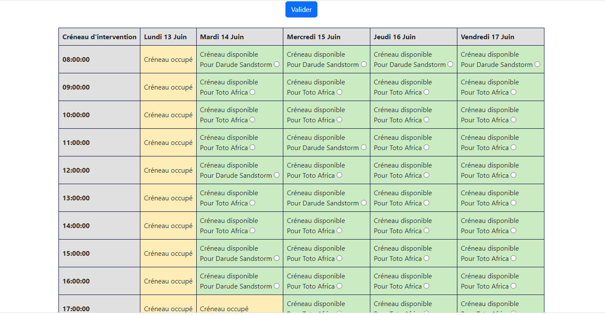
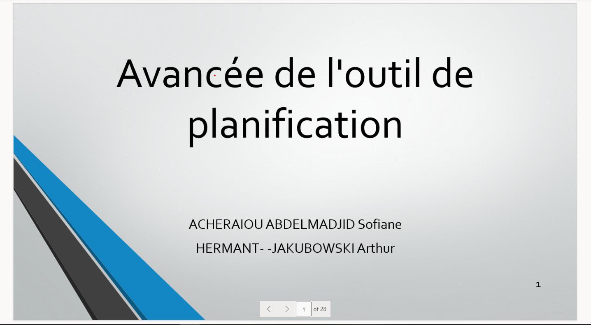

Discussion avec les differents utilisateurs de l'outil de planning interne IMAC qui à été mis en place pour une grosse entreprise ainsi qu'avec les managers afin d'avoir leur retour sur l'outil, leur explications en detail du but de l'outil de leur usages, de l'evolution souhaités et des differents soucis recontrés et amélioration et correction progressive de l'outil afin de coller le plus possible aux differentes remarques et objectifs.
Par exemple il m'a été demandé de:
- -verification du format de dossier afin d'eviter les erreurs de copier coller depuis l'outil de gestion ITSM(format SXXXXXXX_XXXXXXX)
- -ajout d'un calendrier pour plusieurs techniciens
- -ajout d'une page et d'une fonctions pour ajouter plusieurs rôles(IMAC 1, 2, 3) assignés a un technicien. et gestion de leurs pauses dejeuner.
- -Modification extensive du système de mail interne permettant de confimer à l'utilisateur de sa date d'IMAC et des relances en cas de non-prise de rendez-vous
- -amélioration de la vitesse de l'application


Mise en place d'un planning et d'ajouts prioritaires lors de reunions hebdomadaires, revue du code et des ajouts chaque semaines lors de ces réunions. Travail en groupe avec un second stagaire. Explication du projet et travail en parallèle sur plusieurs segments de code. Utilisation d'outils de communication(Teams, Powerpoint) afin de partager regulièrement les avancées du projet
Modification et upload règulier de l'outil et de la base de donnée modifiée en FTP sur le serveur local dans lequel ce service est hebergé, une fois des tests rigoureux et longs avec un jeu de test sur un PC en local et import de la nouvelle structure de la base de données et conversion de l'ancien jeu de données, lors de la mise en production